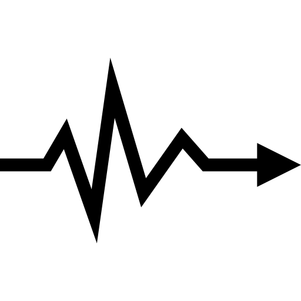
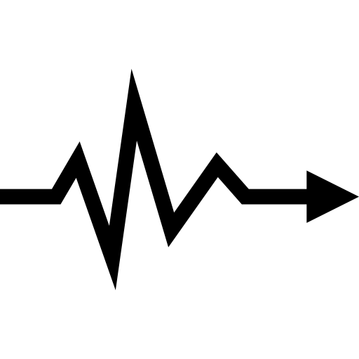

¿Que son las pulsaciones?
La frecuencia cardíaca o las Pulsaciones es uno de los “signos vitales” o los indicadores importantes de la salud en el cuerpo humano. Mide la cantidad de veces por minuto que el corazón se contrae o late.
La frecuencia cardíaca o las Pulsaciones es uno de los “signos vitales” o los indicadores importantes de la salud en el cuerpo humano. Mide la cantidad de veces por minuto que el corazón se contrae o late.
